My day-job is — amongst other things — writing open-sourced code (like webp or sjpeg). But I also write open-sourced code for fun :) Here are some side-project demos.
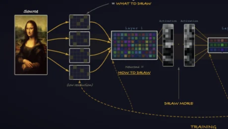
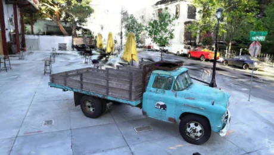
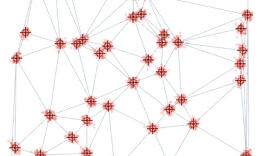
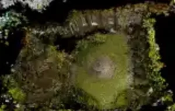
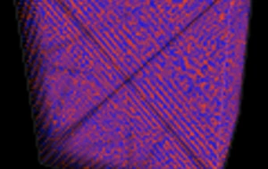
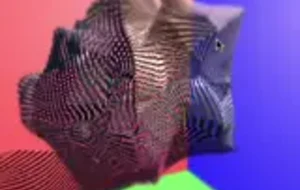
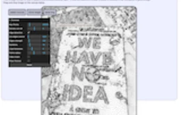
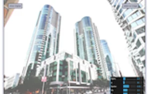
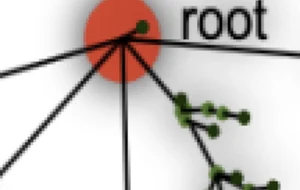
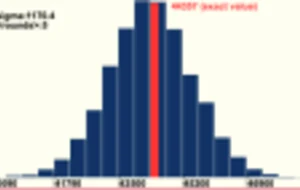
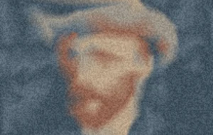
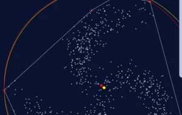
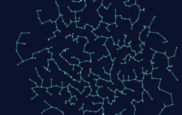
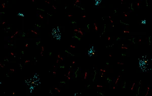
Minishader converts simple ShaderToy code into a standalone HTML + WebGL page. A few shaders made along the way: